How to Make Earrings with Leftover Acrylic (at the laser lab) by Rachel Lee
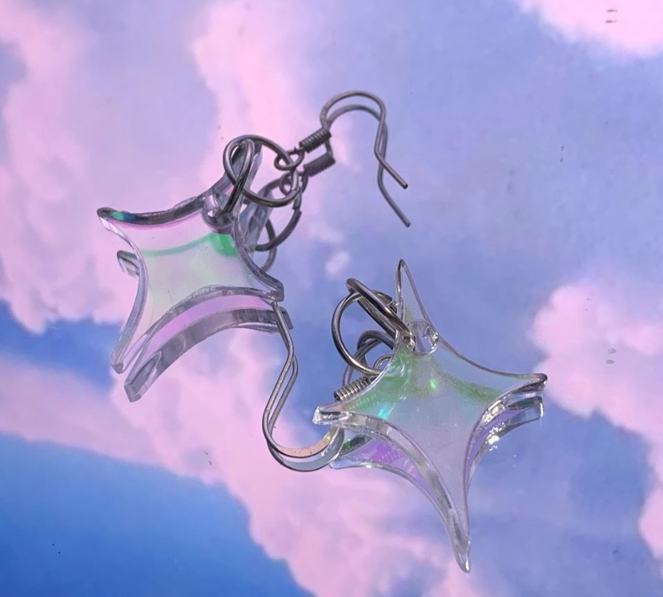 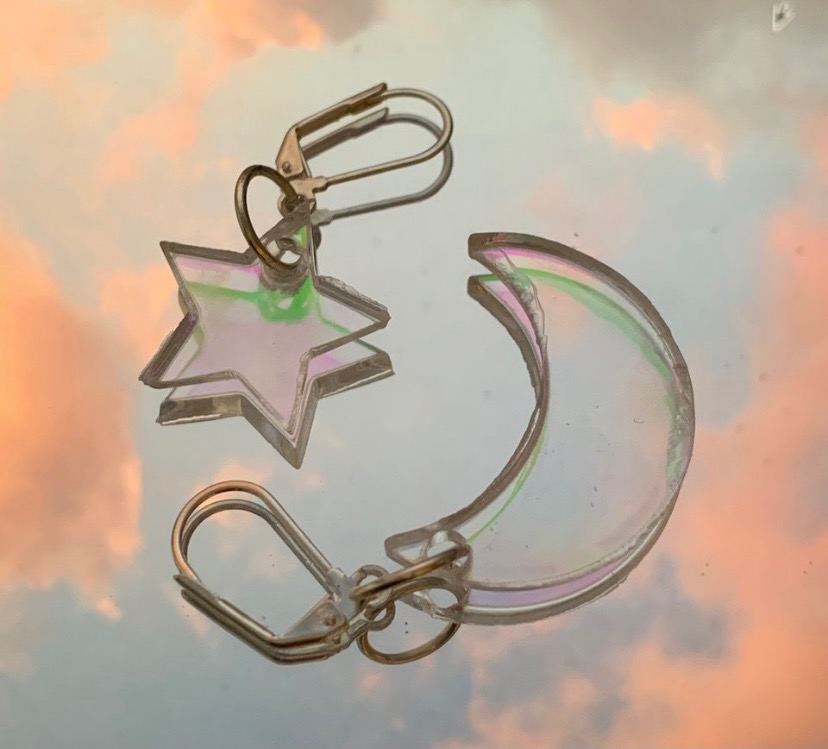
What is the laser lab?
The Laser Cutting Lab consists of multiple laser cutters that can be used to cut and engrave a variety of materials. At Parsons, you can find it at 25 E 13th st on the 4th floor. (Orientation sticker and appointment required.)
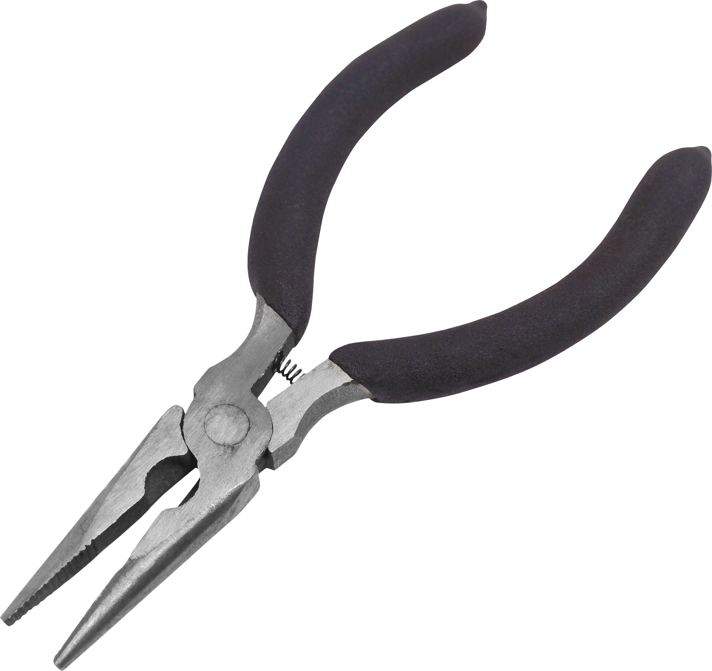 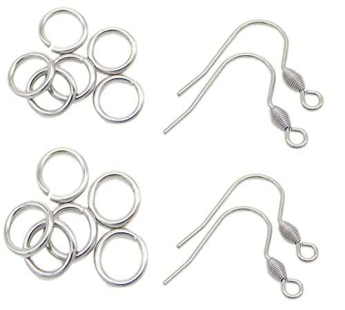
The Laser Cutting Lab consists of multiple laser cutters that can be used to cut and engrave a variety of materials. At Parsons, you can find it at 25 E 13th st on the 4th floor. (Orientation sticker and appointment required.)
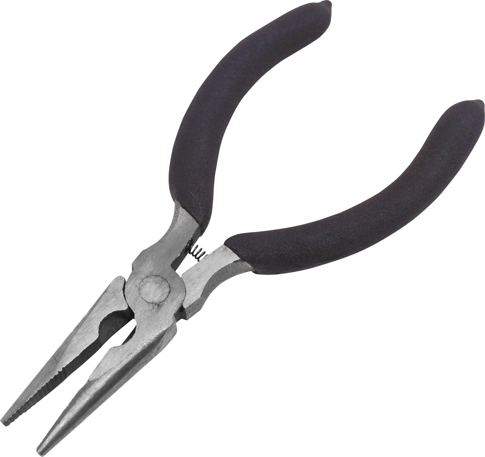 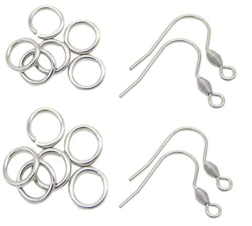
What you need:
1/8” Acrylic sheet (try Canal Plastics)
Small pliers (can be found at any craft store or amazon)
Earring hooks (^)
Small jumprings (^^)
(a decent understanding of) Adobe Illustrator
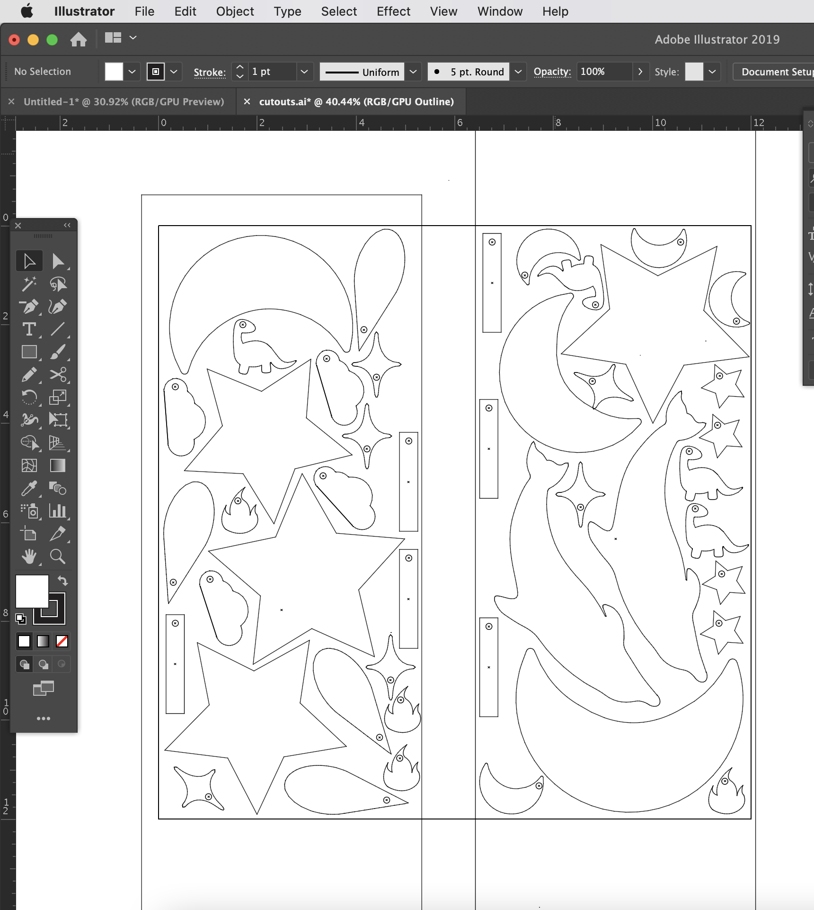 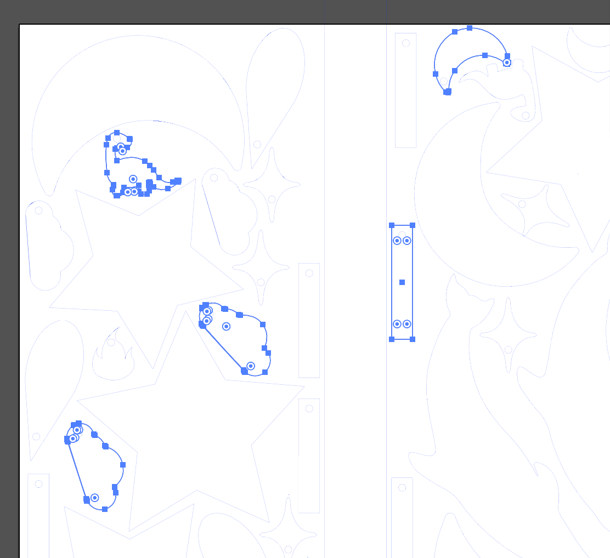
1/8” Acrylic sheet (try Canal Plastics)
Small pliers (can be found at any craft store or amazon)
Earring hooks (^)
Small jumprings (^^)
(a decent understanding of) Adobe Illustrator
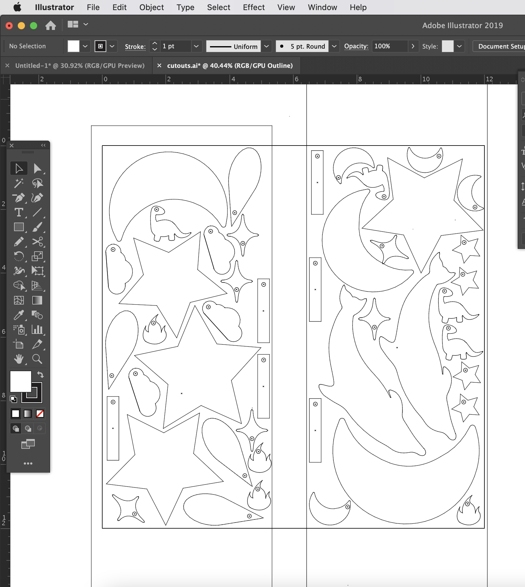 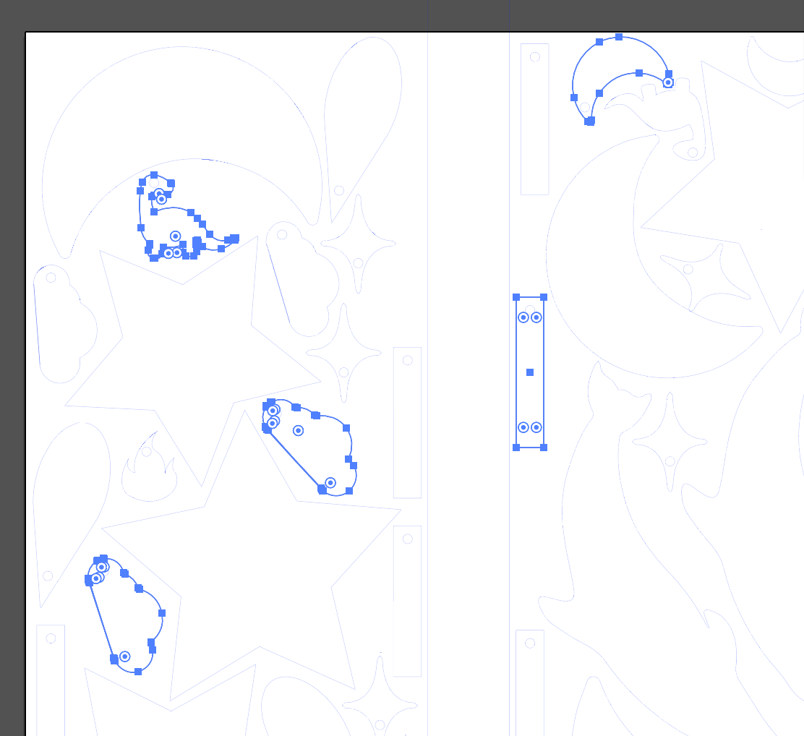
File Setup
After you finish designing what you want on Illustrator, Make shapes of the earrings you want around your first design. Make sure to add a little bit of space between each outline and be sure to include a small circle (in your shape) for your earring hooks to attach. Remember BLUE is to cut!!
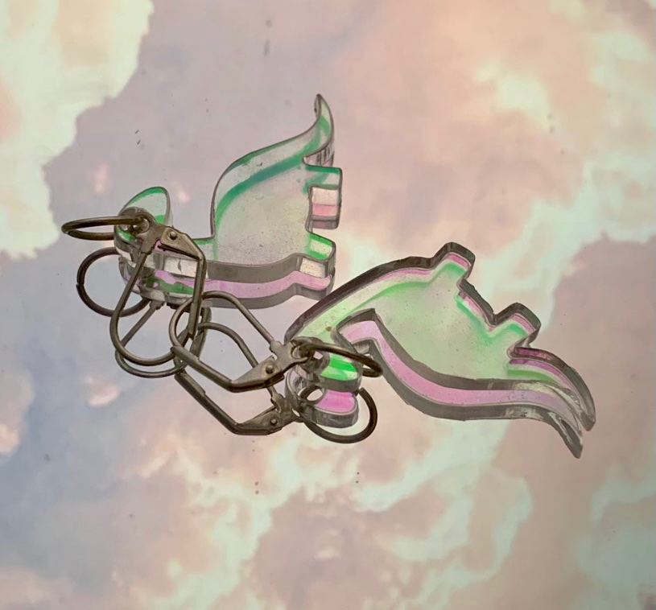
After you finish designing what you want on Illustrator, Make shapes of the earrings you want around your first design. Make sure to add a little bit of space between each outline and be sure to include a small circle (in your shape) for your earring hooks to attach. Remember BLUE is to cut!!
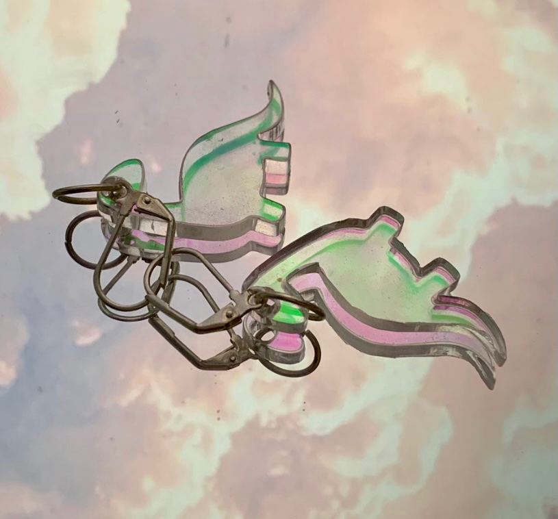
Go to the Laser Lab, cut your designs, add the jumprings & earring hooks to the cut outs, file the edges (for safety), and you’re done!
Great way get more out of you acrylic sheets and you can cut out anything you’d like.
Great way get more out of you acrylic sheets and you can cut out anything you’d like.
thanks!